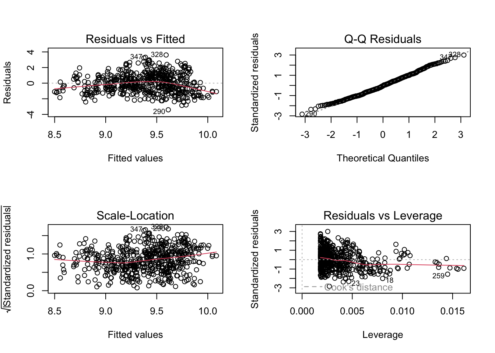
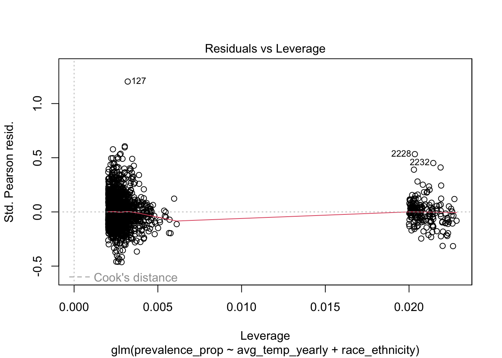
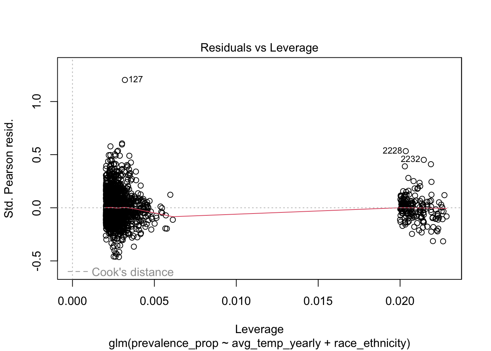

Regression Analysis
We first conducted a linear regression on all data (no stratification), then on data stratified by race, then on data stratificed by race and income to see which was a better fit model
Initial Regression on all data
Check distribution assumption
temp_df |>
ggplot(aes(x = avg_temp)) +
geom_histogram() +
labs(
title = "distribution of average temperature in 2011-2021",
xlab = "average temperature",
ylab = "frequency"
)
asthma_df |>
ggplot(aes(x = prevalence_percent)) +
geom_histogram() +
labs(
title = "distribution of prevalence in 2011-2021",
xlab = "prevalence (percent)",
ylab = "frequency"
) As seen, the two variables generally follow normal distribution
As seen, the two variables generally follow normal distribution
Regression Results
Linear Regression:
model = lm(prevalence_percent ~ avg_temp_yearly, data = merged_df)
summary(model) %>%
broom::tidy() %>%
knitr::kable()| term | estimate | std.error | statistic | p.value |
|---|---|---|---|---|
| (Intercept) | 10.1862308 | 0.1385045 | 73.54440 | 0 |
| avg_temp_yearly | -0.0671492 | 0.0108541 | -6.18651 | 0 |
par(mfrow = c(2,2))
plot(model)
Linear Regression on Log Transformed Data:
model_log =
merged_df |>
mutate(log_precalence = log(prevalence_percent)) |>
lm(log_precalence ~ avg_temp_yearly, data = _)
summary(model_log) %>%
broom::tidy() %>%
knitr::kable()| term | estimate | std.error | statistic | p.value |
|---|---|---|---|---|
| (Intercept) | 2.3165614 | 0.0147289 | 157.27982 | 0 |
| avg_temp_yearly | -0.0072248 | 0.0011543 | -6.25926 | 0 |
par(mfrow = c(2,2))
plot(model_log)Regression of Data Stratified by Race
Linear Regression (main effects):
lm_by_race = lm(prevalence_percent ~ avg_temp_yearly + race_ethnicity, data = race_asthma_df)
summary(lm_by_race)%>%
broom::tidy() %>%
knitr::kable()| term | estimate | std.error | statistic | p.value |
|---|---|---|---|---|
| (Intercept) | 18.0593269 | 0.7249971 | 24.9095155 | 0.0000000 |
| avg_temp_yearly | -0.1436844 | 0.0203280 | -7.0682882 | 0.0000000 |
| race_ethnicityBlack NH | 0.5413827 | 0.7249082 | 0.7468293 | 0.4552386 |
| race_ethnicityHispanic | -2.6406718 | 0.7208131 | -3.6634624 | 0.0002541 |
| race_ethnicityMultirace-NH | 6.3714286 | 0.9718625 | 6.5558948 | 0.0000000 |
| race_ethnicityMultirace NH | 7.1014914 | 0.7247052 | 9.7991451 | 0.0000000 |
| race_ethnicityOther-NH | -3.2775510 | 0.9718625 | -3.3724430 | 0.0007567 |
| race_ethnicityOther NH | -3.0102058 | 0.7244586 | -4.1551108 | 0.0000336 |
| race_ethnicityWhite-NH | -1.7142857 | 0.9718625 | -1.7639179 | 0.0778709 |
| race_ethnicityWhite NH | -2.5938328 | 0.7238144 | -3.5835607 | 0.0003456 |
plot(lm_by_race)

race_asthma_df =
race_asthma_df %>%
mutate(yhat = predict(lm_by_race, newdata = race_asthma_df))
ggplot(race_asthma_df, aes(x = avg_temp_yearly, y = prevalence_percent, color = race_ethnicity)) +
geom_point() +
geom_line(aes(y = yhat)) +
facet_wrap(~ race_ethnicity) +
labs(
title = "Asthma Prevalence by Race and Temperature",
x = "Average Yearly Temperature",
y = "Asthma Prevalence (%)",
caption = "line shows predicted prevalence % equation and data points show actual asthma prevalence"
) +
theme(legend.position="none")
Linear Regression (interaction model):
interaction_model = lm(prevalence_percent ~ avg_temp_yearly * race_ethnicity, data = race_asthma_df)
summary(interaction_model)%>%
broom::tidy() %>%
knitr::kable()| term | estimate | std.error | statistic | p.value |
|---|---|---|---|---|
| (Intercept) | 16.3226013 | 1.6500340 | 9.8922819 | 0.0000000 |
| avg_temp_yearly | 0.0091457 | 0.1320433 | 0.0692627 | 0.9447862 |
| race_ethnicityBlack NH | 2.9418659 | 1.7658831 | 1.6659460 | 0.0958530 |
| race_ethnicityHispanic | -0.4417989 | 1.7483799 | -0.2526905 | 0.8005288 |
| race_ethnicityMultirace-NH | 7.2303596 | 2.3335004 | 3.0985037 | 0.0019672 |
| race_ethnicityMultirace NH | 9.9858149 | 1.7630277 | 5.6640147 | 0.0000000 |
| race_ethnicityOther-NH | -2.7855812 | 2.3335004 | -1.1937350 | 0.2326981 |
| race_ethnicityOther NH | -1.6083896 | 1.7613634 | -0.9131503 | 0.3612540 |
| race_ethnicityWhite-NH | -1.2708602 | 2.3335004 | -0.5446154 | 0.5860680 |
| race_ethnicityWhite NH | -2.0815052 | 1.7599110 | -1.1827332 | 0.2370305 |
| avg_temp_yearly:race_ethnicityBlack NH | -0.2082204 | 0.1407926 | -1.4789163 | 0.1392922 |
| avg_temp_yearly:race_ethnicityHispanic | -0.1919172 | 0.1396038 | -1.3747274 | 0.1693426 |
| avg_temp_yearly:race_ethnicityMultirace-NH | -0.0755851 | 0.1867374 | -0.4047666 | 0.6856846 |
| avg_temp_yearly:race_ethnicityMultirace NH | -0.2494959 | 0.1407047 | -1.7731881 | 0.0763227 |
| avg_temp_yearly:race_ethnicityOther-NH | -0.0432929 | 0.1867374 | -0.2318381 | 0.8166832 |
| avg_temp_yearly:race_ethnicityOther NH | -0.1246312 | 0.1405590 | -0.8866820 | 0.3753378 |
| avg_temp_yearly:race_ethnicityWhite-NH | -0.0390210 | 0.1867374 | -0.2089619 | 0.8344955 |
| avg_temp_yearly:race_ethnicityWhite NH | -0.0497766 | 0.1404473 | -0.3544151 | 0.7230586 |
plot(interaction_model)

Logistic Fit:
fit_logistic = glm(prevalence_prop ~ avg_temp_yearly + race_ethnicity,
data = race_asthma_df,
family = binomial())
broom::tidy(fit_logistic) %>%
knitr::kable()| term | estimate | std.error | statistic | p.value |
|---|---|---|---|---|
| (Intercept) | -1.5051760 | 0.4069662 | -3.6985286 | 0.0002169 |
| avg_temp_yearly | -0.0107981 | 0.0116396 | -0.9277022 | 0.3535621 |
| race_ethnicityBlack NH | 0.0394836 | 0.4063661 | 0.0971626 | 0.9225973 |
| race_ethnicityHispanic | -0.2068794 | 0.4074283 | -0.5077689 | 0.6116154 |
| race_ethnicityMultirace-NH | 0.4072706 | 0.5145261 | 0.7915450 | 0.4286260 |
| race_ethnicityMultirace NH | 0.4498840 | 0.4018567 | 1.1195136 | 0.2629211 |
| race_ethnicityOther-NH | -0.2611228 | 0.5722670 | -0.4562954 | 0.6481776 |
| race_ethnicityOther NH | -0.2385367 | 0.4103378 | -0.5813178 | 0.5610263 |
| race_ethnicityWhite-NH | -0.1305753 | 0.5580578 | -0.2339817 | 0.8149992 |
| race_ethnicityWhite NH | -0.2029822 | 0.4093124 | -0.4959103 | 0.6199577 |
plot(fit_logistic) 

MLR of Race, Income, and Yearly temp
Check distribution
# distribution of outcome variable
ggplot(full_df, aes(x = log_prevalence)) +
geom_histogram() +
labs(
title = "distribution of log-transformed outcome variable",
xlab = "Log-prevalence",
ylab = "Frequency"
) Distribution after log-transform looks normal
Distribution after log-transform looks normal
Regression Results:
model = lm(log_prevalence ~ race + income + avg_temp_yearly, data = full_df)
summary(model)%>%
broom::tidy() %>%
knitr::kable()| term | estimate | std.error | statistic | p.value |
|---|---|---|---|---|
| (Intercept) | 0.4991143 | 0.0169730 | 29.4063771 | 0.0000000 |
| raceMulti | 0.2850025 | 0.0134295 | 21.2220995 | 0.0000000 |
| raceOther | -0.3190599 | 0.0127209 | -25.0816247 | 0.0000000 |
| raceWhite | -0.1719038 | 0.0126481 | -13.5912996 | 0.0000000 |
| raceMultirace | 0.3402026 | 0.0242162 | 14.0485801 | 0.0000000 |
| raceBlack NH | 0.2853422 | 0.0394680 | 7.2297192 | 0.0000000 |
| raceHispanic | -0.0381076 | 0.0388345 | -0.9812799 | 0.3264773 |
| raceOther NH | 0.0325564 | 0.0371548 | 0.8762364 | 0.3809215 |
| raceWhite NH | 0.0403672 | 0.0356929 | 1.1309595 | 0.2580979 |
| income$25-$49,999 | -0.2893334 | 0.0147869 | -19.5668306 | 0.0000000 |
| income$50-$74,999 | -0.4159665 | 0.0147869 | -28.1306808 | 0.0000000 |
| income< $15,000 | 0.3186433 | 0.0143553 | 22.1968687 | 0.0000000 |
| income>=$75,000 | -0.4907071 | 0.0143553 | -34.1829360 | 0.0000000 |
| income$15–$24,999 | 0.1113978 | 0.0371826 | 2.9959654 | 0.0027422 |
| income$25–$49,999 | -0.1078389 | 0.0371826 | -2.9002509 | 0.0037364 |
| income$50–$74,999 | -0.2536880 | 0.0371826 | -6.8227618 | 0.0000000 |
| income$15,000–<$25,000 | 0.0470593 | 0.0440802 | 1.0675836 | 0.2857329 |
| income$25,000–<$50,000 | -0.2222609 | 0.0439167 | -5.0609690 | 0.0000004 |
| income$50,000–<$75,000 | -0.3866814 | 0.0442464 | -8.7392662 | 0.0000000 |
| avg_temp_yearly | -0.0257298 | 0.0009097 | -28.2834870 | 0.0000000 |
par(mfrow = c(2, 2))
plot(model)R-squared: 0.4398 (~44%), meaning the model explains ~44% of the variance in the log-transformed prevalence. Adjusted R-squared: 0.4388, similar to the R-squared, indicating that the model generalizes well with the predictors.
Race is a significant predictor overall, but not all race categories are significant. Different racial groups show varying relationships with the outcome. Income is a highly significant predictor, with lower income categories having significantly lower log-prevalence. As the yearly average temperature increases by 1 unit, the log-prevalence decreases slightly (negative association)